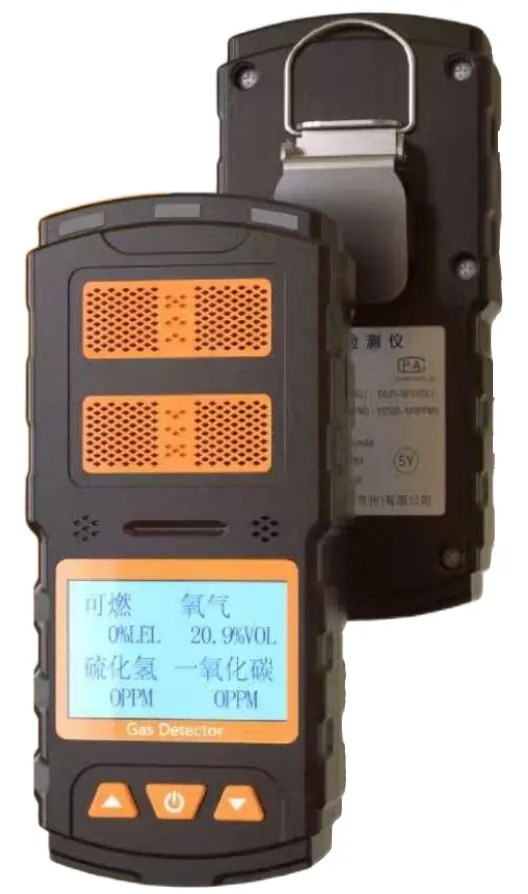

创立于工业安全智能化浪潮与绿色低碳转型加速的时代风口
硕秒科技（无锡）有限公司专注气体安全监测领域，秉持"科技守护生命，创新驱动未来"的核心使命，专注于可燃、有毒有害气体探测器的研发、制造及销售。
公司同时深耕基于激光技术（TDLAS）、光谱视觉技术（气云成像）的前沿产品，以及企业特殊作业环境安全监测设备的研制，为化工、能源、消防等高风险行业量身打造全场景安全监测系统解决方案。
公司组建了由拥有 15 年以上行业资深专家挂帅的研发团队，并与无锡学院展开深度产学研合作，构建起从基础"点检"到全方位"立体化监测"的完备技术矩阵，赋能企业搭建数字化安全管理体系。
了解我们 →固定探测 — 报警控制 — 便携检测 — 移动监护 — 气云成像，覆盖气体安全监测全场景
点型气体 / 可燃气体 / VOCs 探测，扩散式与泵吸式，4-20mA 工业标准信号
1~16 路多点集中监控，RS485 + 4-20mA 双通讯，继电器联动输出
单一 / 四合一气体检测，防水防尘防爆，声光振动多重报警
移动式视频 + 气体联动监护，气体检漏光谱成像，AI 可视化识别

电化学传感 · 数字 LED 显示 · Ex db ib IIC T6 Gb · IP66

催化燃烧原理 · 传感器模组免校准 · 双芯片驱动

长寿命 PID 传感 · 泵吸式采样 · T90<15s · RS485/HART 可选

32 位微处理器 · 多点集中采集 · 六组继电器联动输出

EX / O₂ / CO / H₂S 同测 · 防水防尘防爆 · 便携耐用
制冷型红外探测 ≤15mK · 400+ 气体 · AI 算法主动报警

视频 + 气体双数据源 · 4G/5G 实时传输 · 星光夜视

可燃气体检测 · 小巧便携约 150g · 声光振动报警

常见易燃气体蒸气 101 种 + 有毒气体氧气 26 种，引两国标
从基础"点检"到全方位"立体化监测"的完备技术矩阵
制冷型中波红外探测器，热灵敏度 ≤15mK，远距离观测泄漏气体云逸散并准确定位。
基于激光吸收光谱的前沿探测路线，赋能特殊作业环境安全监测。
机器学习算法实现泄漏气体浓度空间分布与扩散范围的可视化识别并主动报警。
支持 GB 28181 / ONVIF 协议并提供 SDK，易于与第三方软件平台集成。
广泛应用于气体易泄漏场所的安全检测与报警
ISO 三体系管理认证 + 防爆合格资证 （点击证书可查看原件）
 质量管理体系认证 · ISO 9001:2015
质量管理体系认证 · ISO 9001:2015
 环境管理体系认证 · ISO 14001:2015
环境管理体系认证 · ISO 14001:2015
 职业健康安全管理体系认证 · ISO 45001:2018
职业健康安全管理体系认证 · ISO 45001:2018
 防爆合格证 · 点型可燃气体探测器 GTYQ-F950
防爆合格证 · 点型可燃气体探测器 GTYQ-F950
 防爆合格证 · 点型气体探测器 GTYQ-F950
防爆合格证 · 点型气体探测器 GTYQ-F950
 防爆合格证 · 移动式监护卫士 M900
防爆合格证 · 移动式监护卫士 M900
 防爆合格证 · 点型可燃气体探测器 GTYQ-F900
防爆合格证 · 点型可燃气体探测器 GTYQ-F900
 防爆合格证 · VOCs 探测器 TF950-PID
防爆合格证 · VOCs 探测器 TF950-PID
 防爆合格证 · 点型气体探测器 TF900
防爆合格证 · 点型气体探测器 TF900
产品设计依据 GB/T 50493-2019《石油化工可燃气体和有毒气体检测报警设计标准》；职业接触限值依据 GBZ 2.1-2019
告诉我们您的场景与目标气体，硕秒科技为您匹配全场景安全监测方案